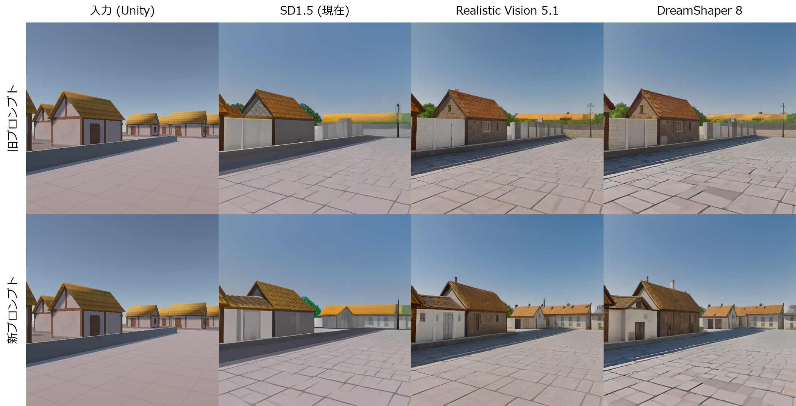
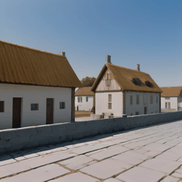
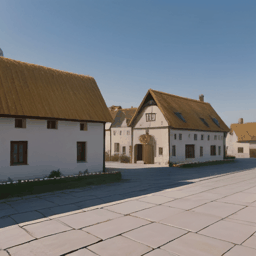

<title>AIニューラルレンダリング 成果報告</title>
<link rel="preconnect" href="https://fonts.googleapis.com">
<link rel="preconnect" href="https://fonts.gstatic.com" crossorigin>
<link rel="stylesheet" href="https://fonts.googleapis.com/css2?family=Zen+Kaku+Gothic+New:wght@500;700;900&family=Noto+Sans+JP:wght@400;500;700&family=JetBrains+Mono:wght@500;700&display=swap">
<style>
/* レイアウト: 1カラムの読み物。各章の要点は左の細い章番号と右の本文で構成し、数値は等幅で並べる */
:root {
  --bg: #f6f7f9;
  --surface: #ffffff;
  --fg: #1d232b;
  --muted: #5b6573;
  --line: #dde2e8;
  --before: #8a96a6;      /* 改善前 */
  --after: #b9781b;       /* 改善後(わらぶき屋根の色) */
  --after-soft: #f5ead7;
  --good: #2f7d4f;
  --bad: #b3423a;
  --code-bg: #eef1f4;
  --f-display: "Zen Kaku Gothic New", "Hiragino Kaku Gothic ProN", "Yu Gothic", sans-serif;
  --f-body: "Noto Sans JP", "Hiragino Sans", "Yu Gothic", "Meiryo", sans-serif;
  --f-mono: "JetBrains Mono", ui-monospace, "Consolas", monospace;
  color-scheme: light;
}
@media (prefers-color-scheme: dark) {
  :root:not([data-theme="light"]) {
    --bg: #14181d; --surface: #1c2229; --fg: #e6eaef; --muted: #9aa5b3; --line: #2e3640;
    --before: #7d8898; --after: #e0a443; --after-soft: #3a2f1c; --good: #5cbf85; --bad: #e07a70; --code-bg: #232a32;
    color-scheme: dark;
  }
}
:root[data-theme="dark"] {
  --bg: #14181d; --surface: #1c2229; --fg: #e6eaef; --muted: #9aa5b3; --line: #2e3640;
  --before: #7d8898; --after: #e0a443; --after-soft: #3a2f1c; --good: #5cbf85; --bad: #e07a70; --code-bg: #232a32;
  color-scheme: dark;
}

* { box-sizing: border-box; }
body { background: var(--bg); color: var(--fg); font-family: var(--f-body); font-size: 16px; line-height: 1.8; margin: 0; }
.wrap { max-width: 920px; margin: 0 auto; padding-inline: 20px; padding-block: 48px 80px; display: grid; gap: 56px; }
h1, h2, h3 { font-family: var(--f-display); text-wrap: balance; line-height: 1.35; margin: 0; }
h1 { font-size: clamp(1.9rem, 4.5vw, 2.6rem); font-weight: 900; }
h2 { font-size: 1.55rem; font-weight: 900; }
h3 { font-size: 1.12rem; font-weight: 700; }
p { margin: 0; }
.lead { font-size: 1.08rem; color: var(--muted); max-width: 62ch; }
.eyebrow { font-family: var(--f-mono); font-size: .78rem; letter-spacing: .08em; color: var(--after); font-weight: 700; }
section { display: grid; gap: 20px; min-width: 0; }
.prose { display: grid; gap: 14px; max-width: 68ch; }
.muted { color: var(--muted); }
strong { font-weight: 700; }
.num { font-family: var(--f-mono); font-variant-numeric: tabular-nums; }

header { display: grid; gap: 16px; }
.hero-figs { display: grid; grid-template-columns: repeat(auto-fit, minmax(160px, 1fr)); gap: 12px; margin-top: 8px; }
.fig { background: var(--surface); border: 1px solid var(--line); border-radius: 10px; padding: 14px 16px; display: grid; gap: 2px; }
.fig .k { font-size: .82rem; color: var(--muted); }
.fig .v { font-family: var(--f-mono); font-size: 1.45rem; font-weight: 700; font-variant-numeric: tabular-nums; }
.fig .v small { font-size: .8rem; color: var(--muted); font-weight: 500; }
.fig .v .arrow { color: var(--muted); font-weight: 500; }
.fig .v .to { color: var(--after); }

figure { margin: 0; display: grid; gap: 8px; }
figure img { width: 100%; border-radius: 8px; border: 1px solid var(--line); display: block; }
figcaption { font-size: .86rem; color: var(--muted); }
.pair { display: grid; grid-template-columns: 1fr 1fr; gap: 16px; }
@media (max-width: 560px) { .pair { grid-template-columns: 1fr; } }

.terms { display: grid; grid-template-columns: repeat(auto-fit, minmax(240px, 1fr)); gap: 12px; }
.term { background: var(--surface); border: 1px solid var(--line); border-radius: 10px; padding: 14px 16px; display: grid; gap: 4px; min-width: 0; }
.term b { font-family: var(--f-display); font-size: 1rem; }
.term span { font-size: .92rem; color: var(--muted); line-height: 1.7; }

.diagram { background: var(--surface); border: 1px solid var(--line); border-radius: 10px; padding: 16px; overflow-x: auto; }
.diagram pre.mermaid { margin: 0; background: transparent; }

.table-wrap { overflow-x: auto; background: var(--surface); border: 1px solid var(--line); border-radius: 10px; }
table { border-collapse: collapse; width: 100%; min-width: 560px; font-size: .94rem; }
th, td { text-align: left; padding: 10px 14px; border-bottom: 1px solid var(--line); vertical-align: top; }
th { font-family: var(--f-display); font-weight: 700; font-size: .86rem; color: var(--muted); background: var(--code-bg); }
tr:last-child td { border-bottom: none; }
td.n { font-family: var(--f-mono); font-variant-numeric: tabular-nums; white-space: nowrap; }
td.after { color: var(--after); font-weight: 700; }

/* 改善の流れ: 実際に行った順番なので番号付き */
.steps { display: grid; gap: 0; counter-reset: step; }
.step { display: grid; grid-template-columns: 52px 1fr; gap: 16px; padding-block: 18px; border-top: 1px solid var(--line); }
.step:last-child { border-bottom: 1px solid var(--line); }
.step::before { counter-increment: step; content: counter(step, decimal-leading-zero); font-family: var(--f-mono); font-weight: 700; color: var(--after); font-size: 1.05rem; padding-top: 2px; }
.step-body { display: grid; gap: 8px; min-width: 0; }
.step-body p { color: var(--fg); }
.result { display: inline-flex; flex-wrap: wrap; gap: 6px 14px; font-size: .9rem; }
.chip { font-family: var(--f-mono); font-variant-numeric: tabular-nums; background: var(--after-soft); color: var(--fg); padding: 2px 10px; border-radius: 999px; }

/* 棒グラフ(同じ尺度で描く) */
.bars { display: grid; gap: 18px; background: var(--surface); border: 1px solid var(--line); border-radius: 10px; padding: 18px; }
.bar-group { display: grid; gap: 6px; }
.bar-title { font-size: .92rem; font-weight: 700; }
.bar-row { display: grid; grid-template-columns: 4.5em 1fr 5.5em; gap: 10px; align-items: center; font-size: .84rem; }
.bar-row .lab { color: var(--muted); }
.track { height: 14px; background: var(--code-bg); border-radius: 3px; overflow: hidden; }
.fill { height: 100%; border-radius: 3px; }
.fill.b { background: var(--before); }
.fill.a { background: var(--after); }
.bar-row .val { font-family: var(--f-mono); font-variant-numeric: tabular-nums; text-align: right; }

.note { border-left: 3px solid var(--after); background: var(--surface); padding: 14px 18px; border-radius: 0 10px 10px 0; display: grid; gap: 8px; }
.rejected { display: grid; grid-template-columns: repeat(auto-fit, minmax(260px, 1fr)); gap: 12px; }
.rejected .term b::before { content: "不採用 "; font-family: var(--f-mono); font-size: .72rem; color: var(--bad); letter-spacing: .06em; margin-right: 4px; }
ul { margin: 0; padding-left: 1.2em; display: grid; gap: 4px; }
code { font-family: var(--f-mono); font-size: .88em; background: var(--code-bg); padding: 1px 6px; border-radius: 4px; }
a { color: var(--after); }
footer { font-size: .84rem; color: var(--muted); border-top: 1px solid var(--line); padding-top: 16px; }
@media (prefers-reduced-motion: reduce) { * { animation: none !important; transition: none !important; } }
</style>

<main class="wrap">

<header>
  <div class="eyebrow">成果報告 / UNITY × ローカル画像生成AI</div>
  <h1>3Dの映像を、AIでリアルタイムに写実的な映像へ</h1>
  <p class="lead">Unityで作ったシンプルな3Dの村を歩くと、その映像を手元のPCの画像生成AIが写実的に描き直し、Unityの画面に表示するシステムです。改善前は約3秒遅れて表示されていたものを、約0.2秒まで縮め、カメラを動かしたときのちらつきを約6割減らしました。</p>
  <div class="hero-figs">
    <div class="fig"><span class="k">操作から表示までの遅れ</span><span class="v">3秒<span class="arrow"> → </span><span class="to">0.2秒</span></span></div>
    <div class="fig"><span class="k">1秒あたりの描き直し枚数</span><span class="v"><span class="to">12.5</span><small> 枚</small></span></div>
    <div class="fig"><span class="k">AIの処理時間(1枚)</span><span class="v">94.7<span class="arrow"> → </span><span class="to">48.1</span><small> ms</small></span></div>
    <div class="fig"><span class="k">ちらつき</span><span class="v"><span class="to">−61</span><small> %</small></span></div>
  </div>
</header>

<section>
  <h2>何をするシステムか</h2>
  <figure>
    
    <figcaption>左端がUnityの映像(入力)。右の3列は、異なるAIモデルで描き直した結果。下段は指示文をシーンに合わせたもので、建物の配置が保たれている。</figcaption>
  </figure>
  <div class="prose">
    <p>あらかじめ3Dモデルで作った世界を、AIで「見た目だけ」描き直すのが狙いです。建物の配置や形は3Dモデルが決めるので世界が破綻せず、細かな質感はAIが補うので、作り込みの少ない3Dモデルでも写実的な映像にできます。</p>
  </div>
</section>

<section>
  <h2>前提となる用語</h2>
  <div class="terms">
    <div class="term"><b>フレーム / fps</b><span>映像を構成する1枚1枚の画像がフレーム。1秒あたりに表示できる枚数がfps。</span></div>
    <div class="term"><b>画像生成AI(Stable Diffusion)</b><span>ランダムな「ノイズ」から少しずつ絵を描き出すAI。元の画像にノイズを足してから描き直すと、元の構図を保ったまま見た目を変えられる。</span></div>
    <div class="term"><b>StreamDiffusion</b><span>画像生成AIを動画向けに高速に動かす仕組み。複数のフレームの処理を少しずつずらして並行して進める。</span></div>
    <div class="term"><b>TensorRT</b><span>NVIDIA製の高速化ツール。AIの計算をGPUに最適な形に変換し、同じ結果をより短い時間で出す。</span></div>
    <div class="term"><b>深度</b><span>カメラから画面の各点までの距離。Unityは3Dの世界を描いているので、正確な値が得られる。</span></div>
    <div class="term"><b>モーションベクトル</b><span>画面の各点が、前のフレームからどの方向に何ピクセル動いたか。</span></div>
  </div>
</section>

<section>
  <h2>改善前の仕組みと課題</h2>
  <div class="diagram">
<pre class="mermaid">
flowchart LR
    U[Unity<br>カメラ映像] -- JPEG / UDP --> P[Python<br>最新の1枚を受信]
    P --> AI[画像生成AI<br>SD1.5 + LCM-LoRA]
    AI -- JPEG / UDP --> R[Unity<br>画面に表示]
</pre>
  </div>
  <div class="prose">
    <p>Unityのカメラ映像をPythonに送り、AIで描き直して送り返すだけの構成でした。表示まで約3秒遅れ、画質も低い状態でした。調べると、次の原因が見つかりました。</p>
  </div>
  <div class="table-wrap">
    <table>
      <thead><tr><th>課題</th><th>調べて分かった原因</th></tr></thead>
      <tbody>
        <tr><td>約3秒の遅れ</td><td>PythonのAIライブラリ(PyTorch)がRTX 5070に対応していなかった。高速化ツール(TensorRT)も初期化に失敗しており、エラーを出さずに高速化なしで動いていた</td></tr>
        <tr><td>画質が低い</td><td>汎用のAIモデルを使っていた。AIへの指示文が「オレンジのレンガの家、黒い屋根」で、実際の村(白い壁、わらぶき屋根)と食い違っていた</td></tr>
        <tr><td>カメラを動かすと模様がちらつく</td><td>AIは毎フレームを独立した1枚として描き直すため、前に描いた模様を覚えていない</td></tr>
      </tbody>
    </table>
  </div>
</section>

<section>
  <h2>改善後の仕組み</h2>
  <div class="diagram">
<pre class="mermaid">
flowchart LR
    subgraph Unity
        A[カメラ映像] --> S[送信]
        D[深度 64x64] --> S
        M[カメラの位置と向き] --> S
        R[画面に表示]
    end
    subgraph Python
        S -- UDP --> P[最新の1枚を受信]
        P --> F[動きを計算]
        F --> N[ノイズを景色と一緒に動かす]
        P --> AI[画像生成AI<br>TensorRTで高速化]
        N --> AI
        AI --> B[前のフレームと合成]
        F --> B
    end
    B -- UDP --> R
</pre>
  </div>
  <div class="prose">
    <p>Unityから映像と一緒に<strong>深度</strong>と<strong>カメラの位置と向き</strong>を送り、各点が前に処理したフレームからどれだけ動いたかをPythonで計算します。その動きを使って、AIに与えるノイズを景色と一緒に動かし、描き直した映像を前のフレームの結果と合成します。追加で送るデータは1フレームあたり約8KBです。</p>
  </div>
</section>

<section>
  <h2>改善の流れ</h2>
  <div class="steps">
    <div class="step"><div class="step-body">
      <h3>実行環境を作り直す</h3>
      <p>RTX 5070に対応したPyTorch(CUDA 12.8版)で、Pythonの環境を一から作り直しました。複数のバージョンが混ざって壊れていた環境を部分的に直すより確実だったためです。</p>
      <div class="result"><span class="chip">遅れ 3秒 → 0.4秒</span><span class="chip">7.2 fps</span></div>
    </div></div>
    <div class="step"><div class="step-body">
      <h3>処理時間を測って、遅い場所を特定する</h3>
      <p>受信、AI、表示、送信のそれぞれにかかる時間を1秒ごとに表示するようにしました。AIの処理が全体の約87%を占めていて、ここを速くすべきだと分かりました。</p>
      <div class="result"><span class="chip">AI 121ms / 1フレーム 約140ms</span></div>
    </div></div>
    <div class="step"><div class="step-body">
      <h3>高速化ツール(TensorRT)をRTX 50シリーズに対応させる</h3>
      <p>StreamDiffusion付属の高速化コードは古いTensorRT向けで、RTX 50シリーズに必要なTensorRT 10では動きませんでした。コードを取り込んで、削除された命令を新しいものに置き換えるなどの修正をしました。高速化の前後で出力が同じ画像になることも確かめています。</p>
      <div class="result"><span class="chip">AI 94.7ms → 48.1ms(約2倍速)</span><span class="chip">12.5 fps / 遅れ約0.2秒</span></div>
    </div></div>
    <div class="step"><div class="step-body">
      <h3>写実的なモデルと、シーンに合った指示文にする</h3>
      <p>3つのAIモデルを同じ画像で比べ、写実系のモデルに変えました。速度はどれも約48msで同じです。指示文が村の見た目とずれていると、奥の家並みが畑に変わるなど建物の形まで崩れることも分かり、指示文を実際のシーンに合わせました。</p>
    </div></div>
    <div class="step"><div class="step-body">
      <h3>ちらつきを数値で測る仕組みを作る</h3>
      <p>村の画像を少しずつ横にずらして「カメラの横移動」を再現し、AIの出力を移動量だけずらして重ねたときの色の差を測るツールを作りました。入力は単純な平行移動なので、理想的な出力なら差は0になります。この数値で、対策の効果を比べられるようにしました。</p>
    </div></div>
    <div class="step"><div class="step-body">
      <h3>ノイズを景色に張り付ける</h3>
      <p>AIはノイズから絵を描きます。ノイズが画面に固定されていると、カメラが動いたときに模様が建物の上を滑ります。そこでノイズを景色と一緒に動かしました。最初の素直な方法では逆にちらつきが23%増えたため、原因を調べました。AIは8×8画素のマス目単位で計算しているので、マス目単位でノイズを動かす方式に直しました。</p>
      <div class="result"><span class="chip">模様が少しずつ変わる量 −48%</span></div>
    </div></div>
    <div class="step"><div class="step-body">
      <h3>前のフレームの結果と合成する</h3>
      <p>前のフレームの出力を、動いた分だけずらしてから今の出力と半分ずつ混ぜます。ノイズの移動は「ゆっくりした変化」を、合成は「隣り合うフレームの差」を抑え、役割を分担しています。</p>
      <div class="result"><span class="chip">ちらつき −61%</span><span class="chip">模様が少しずつ変わる量 −61%</span></div>
    </div></div>
    <div class="step"><div class="step-body">
      <h3>Unityの3D情報から、正確な動きを計算する</h3>
      <p>Pythonは処理が間に合わないフレームを捨てているため、Unityが出す「1フレーム前からの動き」は使えません。代わりに深度とカメラの位置と向きを送り、処理するフレーム同士の動きをPythonで計算しました。計算した動きは理論値と一致し、実機でも映像から推定した動きとほぼ一致しました(例: 計算 +35.3px、映像から +33.9px)。</p>
    </div></div>
    <div class="step"><div class="step-body">
      <h3>止まっているときに画面が変わり続ける問題を直す</h3>
      <p>カメラの移動量と回転量を表示して調べると、止まっているつもりでもカメラが1フレームに0.031°ずつ回り続けていました。物理演算でプレイヤーの回転が固定されていなかったためです。設定を直し、1ピクセル未満の動きは「静止」として扱うようにしました。</p>
      <div class="result"><span class="chip">静止中の画面の変化 0</span></div>
    </div></div>
    <div class="step"><div class="step-body">
      <h3>物陰から景色が現れたときの虹色の縞を消す</h3>
      <p>建物の陰から背景が現れる場面で、虹色の縞が出ていました。手前の板と奥の壁だけの場面で再現すると、建物の端の細い帯のノイズが毎フレームコピーされ、ノイズが横に引き伸ばされていました。深度を使って「前のフレームでは隠れていた部分」を判定し、そこには新しいノイズを割り当てました。</p>
      <div class="result"><span class="chip">隣り合うマスが同じノイズの割合 86% → 0%</span></div>
    </div></div>
    <div class="step"><div class="step-body">
      <h3>使い勝手を整える</h3>
      <p>Unityの再生を止めると約3秒でPythonも自動で終了するようにしました。映像を待つ間もウィンドウの処理を続け、「応答なし」にならないようにしています。</p>
    </div></div>
  </div>
</section>

<section>
  <h2>数値で見る成果</h2>
  <div class="bars" role="img" aria-label="改善前後の比較グラフ">
    <div class="bar-group">
      <div class="bar-title">操作から表示までの遅れ(体感、秒)</div>
      <div class="bar-row"><span class="lab">改善前</span><div class="track"><div class="fill b" style="width:100%"></div></div><span class="val">約3.0</span></div>
      <div class="bar-row"><span class="lab">環境修正後</span><div class="track"><div class="fill b" style="width:13.3%"></div></div><span class="val">約0.4</span></div>
      <div class="bar-row"><span class="lab">最終</span><div class="track"><div class="fill a" style="width:6.7%"></div></div><span class="val">約0.2</span></div>
    </div>
    <div class="bar-group">
      <div class="bar-title">AIの処理時間(1枚あたり、ミリ秒、同じ条件で測定)</div>
      <div class="bar-row"><span class="lab">高速化なし</span><div class="track"><div class="fill b" style="width:100%"></div></div><span class="val">94.7</span></div>
      <div class="bar-row"><span class="lab">TensorRT</span><div class="track"><div class="fill a" style="width:50.8%"></div></div><span class="val">48.1</span></div>
    </div>
    <div class="bar-group">
      <div class="bar-title">ちらつき(隣り合うフレームの色の差、小さいほど安定)</div>
      <div class="bar-row"><span class="lab">対策なし</span><div class="track"><div class="fill b" style="width:100%"></div></div><span class="val">7.83</span></div>
      <div class="bar-row"><span class="lab">対策あり</span><div class="track"><div class="fill a" style="width:38.6%"></div></div><span class="val">3.02</span></div>
    </div>
    <div class="bar-group">
      <div class="bar-title">模様が少しずつ別物に変わる量(10フレーム離れた差)</div>
      <div class="bar-row"><span class="lab">対策なし</span><div class="track"><div class="fill b" style="width:100%"></div></div><span class="val">12.47</span></div>
      <div class="bar-row"><span class="lab">対策あり</span><div class="track"><div class="fill a" style="width:39.2%"></div></div><span class="val">4.89</span></div>
    </div>
  </div>

  <div class="table-wrap">
    <table>
      <thead><tr><th>項目</th><th>改善前</th><th>改善後</th><th>補足</th></tr></thead>
      <tbody>
        <tr><td>操作から表示までの遅れ</td><td class="n">約3秒</td><td class="n after">約0.2秒</td><td>体感</td></tr>
        <tr><td>1秒あたりの描き直し枚数</td><td class="n">7.2枚</td><td class="n after">12.5枚</td><td>改善前の値はGPU対応直後。Unityと同時に動かした状態</td></tr>
        <tr><td>AIの処理時間</td><td class="n">94.7ms</td><td class="n after">48.1ms</td><td>Unityなし、同じ条件での比較</td></tr>
        <tr><td>ちらつき</td><td class="n">7.83</td><td class="n after">3.02</td><td>−61%</td></tr>
        <tr><td>模様が少しずつ変わる量</td><td class="n">12.47</td><td class="n after">4.89</td><td>−61%</td></tr>
        <tr><td>AIによる描き変えの量</td><td class="n">15.55</td><td class="n after">14.03</td><td>写実性はほぼ保ったまま、ちらつきを減らした</td></tr>
        <tr><td>物陰の虹色の縞(隣り合うマスが同じノイズの割合)</td><td class="n">86%</td><td class="n after">0%</td><td>合成した場面で再現して測定</td></tr>
        <tr><td>静止中の画面の変化</td><td class="n">変わり続ける</td><td class="n after">0</td><td>0.5pxのわずかな揺れを与えて測定</td></tr>
      </tbody>
    </table>
  </div>
  <p class="muted" style="font-size:.9rem">ちらつきの数値は、カメラの横移動を再現した60フレームで測定(512×512、1フレーム4px移動)。色の差は0〜255の平均。</p>

  <div class="pair">
    <figure><figcaption>対策なし: 模様がフレームごとに描き直される</figcaption></figure>
    <figure><figcaption>対策あり: 模様が景色に付いて動く</figcaption></figure>
  </div>
</section>

<section>
  <h2>仕組み上の限界</h2>
  <div class="note">
    <p><strong>カメラを動かすと、建物の細かな見た目は少しずつ変わります。</strong></p>
    <p>このシステムは、毎フレームの映像を1枚の画像としてAIに描き直させています。AIは前のフレームで何を描いたかを覚えていないため、カメラが動いて入力が少し変わると、壁の模様などの細部が描き直されます。対策で変化の量は約6割減らしましたが、1枚ずつ描き直す仕組みである以上、完全になくすことはできません。</p>
    <p>根本的に解決するには、AIが描いた結果を3Dモデルの表面(テクスチャ)に焼き付けてUnityで描画するなど、仕組み自体を変える必要があります。</p>
  </div>
</section>

<section>
  <h2>試したが採用しなかったこと</h2>
  <div class="rejected">
    <div class="term"><b>前のフレームの結果を引き継ぐ</b><span>前の出力をAIの描き始めに混ぜる方式。シミュレーションでは上乗せで約2割改善したが、AIの描き変えが雪だるま式に積み重なり、元の村にない建物や石畳が描かれた。弱めると写実性が下がり、実機でも改善を感じられなかった。</span></div>
    <div class="term"><b>近傍クランプ</b><span>ゲームの残像対策で使われる手法。残像は減るが安定性も下がり(ちらつき削減 −61% → −52%)、虹色の縞には効果がなかった。</span></div>
    <div class="term"><b>処理段数を減らす</b><span>AIの描き直しを3段階から2段階にすると速くなるが、画質の低下が目立った。</span></div>
  </div>
</section>

<section>
  <h2>使った技術</h2>
  <div class="table-wrap">
    <table>
      <tbody>
        <tr><th>3D環境</th><td>Unity 6.3、URP 17.3(深度を取り出す処理を自作)</td></tr>
        <tr><th>AI</th><td>StreamDiffusion、Realistic Vision V5.1(Stable Diffusion 1.5系)、LCM-LoRA、TinyVAE</td></tr>
        <tr><th>高速化</th><td>TensorRT 10.16(RTX 50シリーズ対応に修正)、PyTorch 2.11 + CUDA 12.8</td></tr>
        <tr><th>通信</th><td>UDP(映像JPEG + 深度 + カメラの位置と向き)</td></tr>
        <tr><th>開発環境</th><td>Windows 11、RTX 5070(VRAM 12GB)、Core i5-12400、メモリ32GB</td></tr>
      </tbody>
    </table>
  </div>
</section>

<footer>
  ソースコード: <a href="https://github.com/YumaOkamoto1228/neural_rending_demo">YumaOkamoto1228/neural_rending_demo</a>(v1.1)。ちらつきの測定方法と詳しい結果は docs/flicker_results.md。
</footer>

</main>
